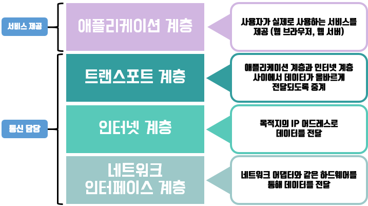
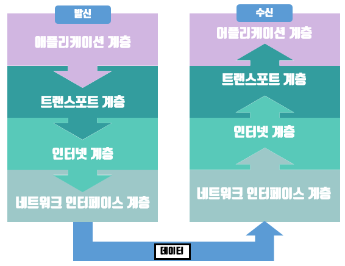
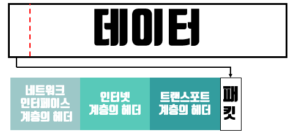
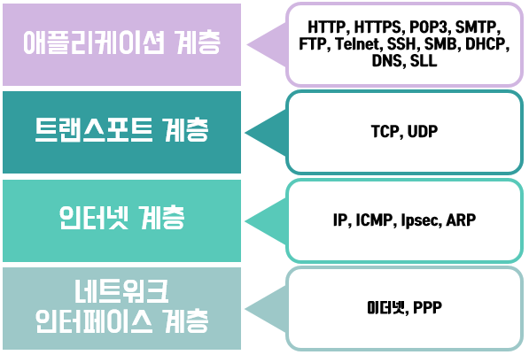

컴퓨터 통신에 참여하는 여러 장비나 프로그램의 역할들을 쉽게 이해하기 위해 분류하고 추상화 한 것을 계층 모델이라고 한다. 계층 모델은 아래의 그림과 같이 되어 있다.

위의 계층 모델은 TCP/IP 계층 모델이며, 이보다 더 세분화 된 OSI 참조 모델이라는 것이 존재한다.
각각의 계층은 역할이 있으며 각 역할에 대한 내용은 위의 그림에 간단하게 나와있다.
통신을 하는 두 컴퓨터의 모습을 간단하게 보자면 아래의 그림과 같다.

발신지에서는 애플리케이션 계층의 데이터를 차례로 다음 계층으로 전달하여 수신지로 보낸다.
수신지에서는 받은 데이터를 네트워크 인터페이스 계층에서부터 차례로 전달하며 수신지의 어플리케이션 계층에 있는 프로그램으로 데이터를 보낸다.
네트워크는 데이터를 패킷(Packet) 이라는 작은 단위로 분할하여 보낸다. 패킷들은 수신지에서 다시 하나의 데이터로 합쳐진 다음 애플리케이션 계층으로 이동한다.
또한 각각의 패킷에는 트랜스포트 계층, 인터넷 계층, 네트워크 인터페이스 계층에서 발신지와 수신지의 정보를 담은 헤더라는 것을 덧붙여서 수신지로 보낸다.

이렇게 헤더에 발신지와 수신지의 정보를 담고 있기 때문에 데이터는 수신지로 보낼수가 있다.
프로토콜은 컴퓨터와 컴퓨터가 통신을 하기위해 정해놓은 규칙을 말한다. 헤더에 들어가는 정보의 종류, 구조, 순서 등을 정하는 것이다.(반드시 헤더가 아닐수도 있다.)
여러가지 프로토콜이 있으며, 각각의 계층마다 사용하는 프로토콜이 존재한다.

네트워크와 관련된 여러가지를 보면 'TCP/IP' 라는 단어가 많이 나온다. 이 것은 하나의 프로토콜을 지칭하는 말이 아니라 인터넷에서 사용되는 각종 표준 프로토콜을 할데 모아 일컫는 말이라고 한다.
흔히 TCP/IP라고 하는 것은 TCP와 IP가 프로토콜 중 가장 대표적이기 때문이라고 한다.
인터넷 프로토콜 집합을 의미하는 단어가 필요하다면 TCP/IP 프로토콜 스위트(TCP/IP Protocol Suite) 또는 인터넷 프로토콜 스위트(Internet Protocol Suite)라고 하면된다.
각 계층 별로 사용되는 프로토콜들에 대해서 간단하게 알아보자.
최초 작성일 : 2016-10-29 (토요일)
참고 자료